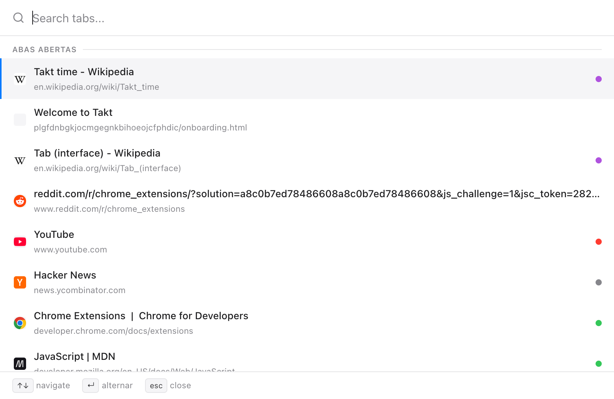
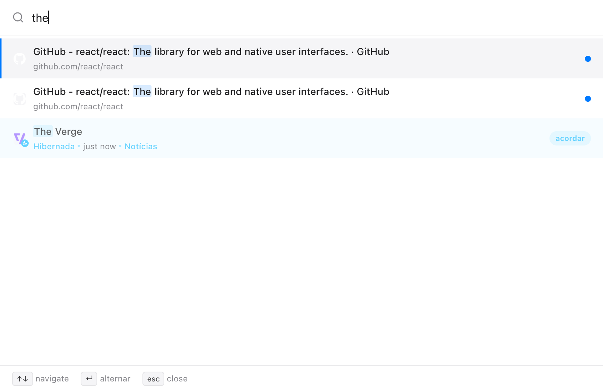
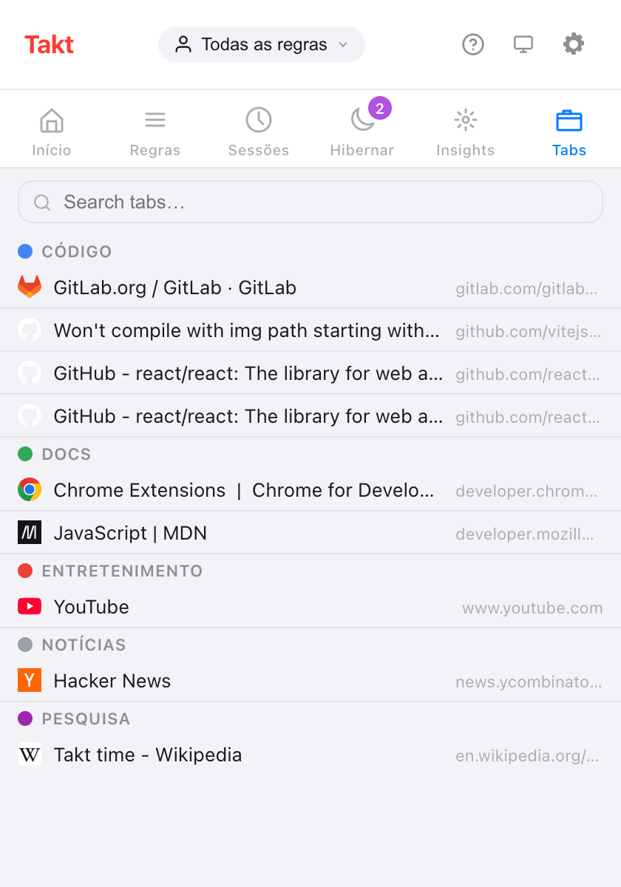

Resposta curta: Alt+Shift+Space abre uma caixa de pesquisa sobre a página. Digite, use as setas e pressione Enter.
- Pesquisa abas abertas, abas hibernadas e o histórico de navegação, se você der permissão.
- Funciona também nas páginas
chrome://, numa janela pequena. - O Quick Switch é Premium (US$ 3/mês ou US$ 30/ano). A caixa de pesquisa do painel Tabs do popup é gratuita.
Por que achar uma aba é tão lento?
Passando de umas 20 abas, a barra de abas do Chrome mostra os favicons e pouco mais. Você caça pelo ícone, clica na aba errada do GitHub, tenta de novo.
Digitar é mais rápido que procurar com os olhos. Você lembra "o pull request sobre cache", não em que ponto da barra ele está.
Como pesquiso minhas abas abertas pelo teclado?
- Pressione Alt+Shift+Space. Uma caixa de pesquisa abre sobre a página atual.
- Digite qualquer parte do título ou da URL. A busca não diferencia maiúsculas de minúsculas, e a lista se atualiza a cada tecla.
- Navegue com ↑ e ↓. A seleção dá a volta ao chegar nas pontas.
- Pressione Enter para ir. O Takt foca a aba e traz a janela dela para a frente.
Mais duas teclas: Tab copia o título do resultado selecionado para a caixa de pesquisa, e Esc fecha a caixa. Ela também se fecha se você clicar fora dela ou trocar de janela.

O que o Quick Switch pesquisa?
| Fonte | Quando aparece | O que o Enter faz |
|---|---|---|
| Abas abertas | Sempre; as usadas mais recentemente primeiro, a aba atual por último | Vai para a aba |
| Abas hibernadas | Sempre, até 50 | Desperta a aba onde ela estava |
| Histórico | Quando você digita, com a permissão de histórico; até 20 | Abre numa nova aba |
A ordem é fixa: abas abertas, depois abas hibernadas, depois o histórico. O histórico pula páginas que já estão abertas ou hibernadas e nunca lista páginas chrome:// nem de extensões.

Essa última linha é o motivo de ter a pesquisa e a hibernação na mesma extensão. Você pode fechar abas sem medo de perdê-las, porque digitar o nome delas as traz de volta.
Funciona nas páginas chrome://?
Sim. As extensões não podem desenhar sobre as páginas do próprio Chrome, então nelas o Quick Switch abre como uma janela de 560 × 480. Isso vale para as páginas chrome://, chrome-extension://, about: e chrome-untrusted:// e para a Chrome Web Store. As teclas são as mesmas.
Existe um jeito gratuito de pesquisar abas?
Sim: o painel Tabs do popup do Takt. Ele lista todas as abas abertas sob o grupo de cada uma, com as abas sem grupo numa seção própria. Digite na caixa de pesquisa para filtrar por título ou URL; Esc limpa a caixa. Clique numa linha para focar a aba e trazer a janela dela para a frente.

| Painel Tabs do popup | Quick Switch | |
|---|---|---|
| Plano | Free | Premium |
| Como abrir | Clique no ícone do Takt, depois em Tabs | Alt+Shift+Space |
| Abas abertas | Sim, por grupo | Sim, as mais recentes primeiro |
| Abas hibernadas | Não (elas têm um painel próprio) | Sim |
| Histórico | Não | Com permissão |
| Precisa do mouse | Para abrir e escolher | Não |
Posso mudar o atalho?
Sim. Vá em chrome://extensions/shortcuts, encontre o Takt, clique no lápis ao lado de Quick-switch e pressione as teclas que quiser.
Meu histórico é enviado para algum lugar?
Não. A pesquisa no histórico fica desligada até você conceder a permissão opcional de histórico em Settings → Permissões. A pesquisa roda dentro do Chrome, e você pode revogar a permissão na mesma página. Sem ela, o Quick Switch continua pesquisando as abas abertas e hibernadas.
O que o Quick Switch não faz
Ele procura exatamente as letras que você digita, em qualquer ponto do título ou da URL. Não há correspondência aproximada, então "gthub" não encontra nada. No plano gratuito, o atalho não tem efeito; use o painel Tabs.
Pare de caçar favicons. Digite o nome da aba.
Adicionar o Takt ao ChromePerguntas frequentes
Qual é o atalho para pesquisar abas abertas com o Takt?
Alt+Shift+Space abre o Quick Switch. Mude em chrome://extensions/shortcuts.
O Quick Switch funciona nas páginas chrome://?
Sim. Nas páginas em que extensões não podem rodar, ele abre numa janela de 560 × 480 em vez de aparecer sobre a página.
Existe um jeito gratuito de pesquisar abas no Takt?
Sim. O painel Tabs do popup lista as abas abertas por grupo e tem uma caixa de pesquisa. O Quick Switch é Premium, por US$ 3/mês ou US$ 30/ano.
O Quick Switch pesquisa meu histórico de navegação?
Só com a permissão opcional de histórico. Os resultados do histórico aparecem quando você começa a digitar, até 20, e a pesquisa roda dentro do Chrome.